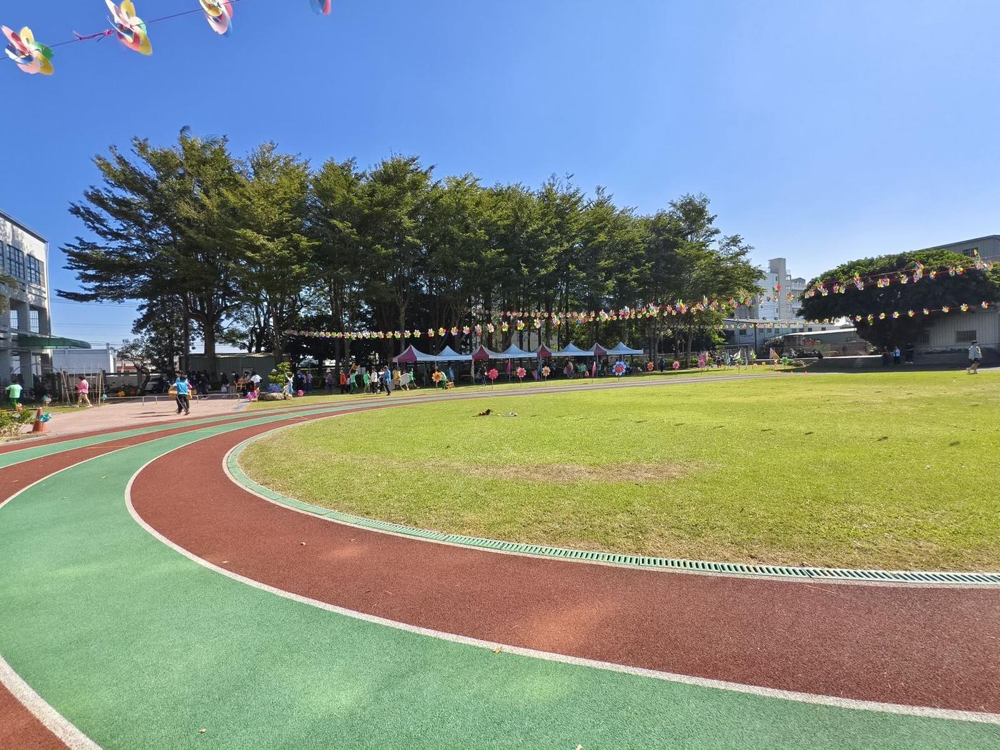

選項 A
接受補助，改建 PU 跑道

他校實例：外圈 PU、內圈草坪（僅供參考外觀）
得到的
- 全年都能跑，雨停後很快就能使用，不再泥濘、揚塵
- 地面平整；緣石與溝蓋一併更新，減少絆倒
- 日常維護輕，不必每天澆水、割草
- 中央草坪保留並整修，AC 地移除改種草
- 跳遠場有標準的 PU 助跑道
- 建造經費由教育部補助，學校不必自籌
- 周邊學校多已設有 PU 跑道，較符合家長與社區的運動需求
要付出的
- 外圈跑道由草地變成紅色 PU，綠地面積減少；有同仁擔心影響黃鸝鳥等校園生態
- PU 是不透水面層；學校本身地勢低窪，有同仁擔心排水問題加劇（本案已含溝蓋更新與溝面鑽孔排水）
- 烈日下 PU 表面溫度比草地高，也可能有橡膠氣味；材質較硬，跌倒時容易擦傷
- 113 年建置的自動澆灌系統，跑道上的噴頭需要移設
- 施工期間，操場需暫停使用；施工須特別保護老樹根系（已列為設計前提）
- PU 面層日後需定期修補、翻新（體育署以每年約 8 萬元估算）